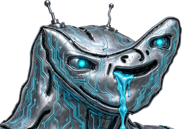

A custom cursor that talks back when you click.
Touch screens keep their normal behavior and stay silent.
Copy dist/jevf-cursor.js and the four files from assets/ into your site, then add one line:
<script src="cursor/jevf-cursor.js" data-jevf-auto data-base="cursor"></script>
That is the whole install. No build step, no dependencies, no framework.
<script src="cursor/jevf-cursor.js"></script>
<script>
JevfCursor.init({
image: 'cursor/cursor.png',
image2x: 'cursor/cursor@2x.png',
hotspot: [16, 0],
sound: ['cursor/click.mp3', 'cursor/click.ogg'],
volume: 0.7,
retrigger: 'restart',
toggleButton: true
});
</script>
| Option | Default | What it does |
|---|---|---|
image / image2x | cursor/cursor.png | The cursor art. The 2x file is used on retina screens. |
hotspot | [16, 0] | Which pixel of the 1x image is the actual pointing tip. |
sound | ['…mp3','…ogg'] | Sources in order of preference; the browser picks the first it can play. |
volume | 0.7 | 0 to 1. |
retrigger | 'restart' | restart cuts the sound off and replays it, overlap stacks copies, ignore lets the current one finish. |
buttons | [0] | Which mouse buttons make noise. 0 left, 1 middle, 2 right. |
requireFinePointer | true | Skips the whole thing on touch screens. |
preserveTextCursor | true | Keeps the normal I-beam inside inputs and text areas. |
toggleButton | false | Adds a small mute button in the corner. |
persistMute | true | Remembers the mute choice in localStorage. |
JevfCursor.mute(), .unmute(), .toggle(), .isMuted(),
.setVolume(0.4), .play(), .destroy()